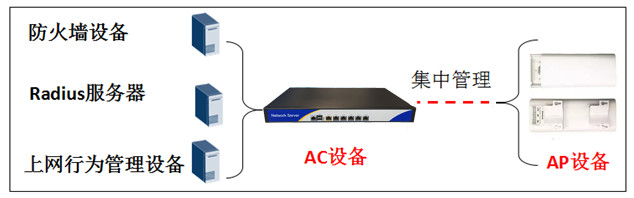
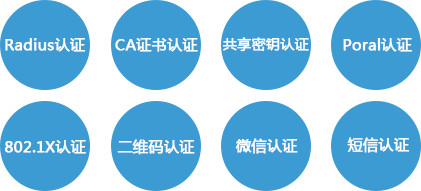
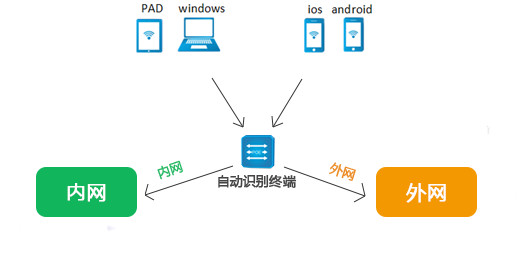
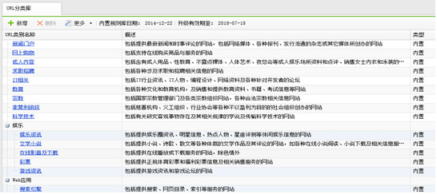
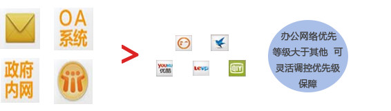
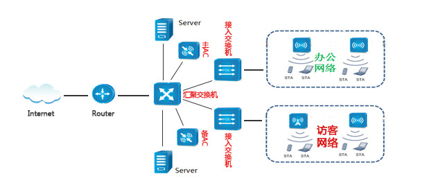

政府单位 无线解决方案
为政府办公大厅访民无线接入业务办理、在线民调、政府微信公众推广 、数据安全防护等服务提供专业无线网络解决方案
一、政府单位 无线网络覆盖需求背景与挑战
随着国家政府信息化建设的进行，无线网络的建设也开始为政府办公、民众办事等事务提供便利。然而政府部门对网络的安全防护要求很高，不仅需要保障人民的信息安全，防止个人信息被窃取，而且需要保护政府办公人员的信息安全，禁止泄露政府、国家机密信息。
越来越多的政府单位在无线网络的部署和运营中遇到困难：
- 访客网络认证接入机制差，接入安全性待提高；
- 上网行为识别和管控能力差，上网权限分配不合理；
- 网络稳定性差，安全隔离机制差，安全防护能力低；
- 专业维护人员少，设备统一管控困难，运维成本高;
二、魔翎无线 政府单位无线网络解决方案
魔翎无线，专注无线产品安全研究，从接入层进行多层面接入准控，从网络层进行广播隔离和优化，从应用层进行精准识别和防控，层层保护政府无线网络的安全，确保信息安全。
（一）产品统一管理维护，一机多用，保障客户投资
接入AP由AC统一配置管控，安全简便；
一机多用，功能全面，节约客户投资；
魔翎无线AC设备，一机多用，它即是一台AC设备，可以实现对AP的集中配置和管理，同时还是一台防火墙设备，提供安全防护，还是一台Radius服务器，实现统一接入认证，还是一台上网行为管理设备，实现对上网行为的统一审计和管控。
（二）认证机制安全简便，产品支持负载均衡、防欺骗，保障政府单位网络体验和信息安全
魔翎无线系统，支持多种认证接入方式，可以灵活为政府办公人员、外访民众等人员提供不同的接入认证方式：
- AP间负载均衡，用户数量均衡化接入，保障用户的接入；

- 自动检测干扰与故障，自动调整产品功率和信道，保障信号覆盖范围；

- 自动检测非法钓鱼AP，自动进行WIPS防护，保障访客和政府办公人员的信息安全；

（三）终端识别接入，权限自定义，办公网和访客网隔离，保障政府网络安全
魔翎无线系统，可以准确识别接入终端类型，并进行账号与MAC的自动绑定，支持用户分组，充分保障安全接入，同时内网广播优化，办公网和访客网隔离，隔离内部不良网络攻击，保障政府内网信息安全。
（四）上网应用精确识别管控，行为安全审计防护，避免法律责任
魔翎无线系统，拥有国内最大的应用识别库和URL库，定时更新，充分保障内网安全，既满足访客在大厅“在线”办理业务，又能实时对所有的上网行为进行管控和审计，截止非法访问，记录上网行为。
- 外网访问应用准确识别，全部记录，符合公安部82号令要求；
- 内网应用识别把控，保障办公，提高政府办公效率； 
（五）双机热备、故障时无感知业务切换，稳定可靠
魔翎无线系统，在政府单位内网汇聚层部署两台AC设备，实现双机热备，避免意外情况下的单点故障，保障网络的稳定可靠性。
魔翎无线，政府单位无线系统，从各个方面对网络进行安全防护，充分保障政府单位信息安全，助力政府提高办公效率。
魔翎无线，政府单位无线解决方案，专业为您服务！